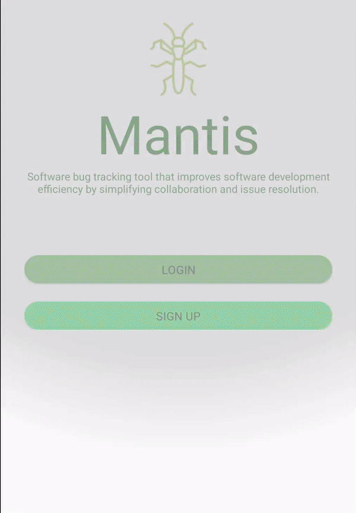

<section class="bg-dark" id="Who and What">
    <div class="container">
        <div class="row">
            <div class="col-lg-8 col-lg-offset-2 text-center">
                <h2 class="section-heading">Is Mantis right for you?</h2>
                <hr class="light">
                <p class="text-faded">Mantis is made for solo software developers, as well as teams.</p>
                <h3>Users</h3>
                <p class="text-faded">Mantis allows users to have their own account, in order to minimize clutter and only see the projects and tickets that they are assigned to.</p>
                <h3>Projects</h3>
                <p class="text-faded">Mantis allows developers to easily keep track of their projects. Mantis allows users to create a project, and have their projects listed in a clean and easy to use UI.</p>
                <h3>Tickets</h3>
                <p class="text-faded">Mantis allows users to create new tickets within their projects, and easily be able to keep track of their tasks that need to be done.</p>
                
            </div>
        </div>
    </div>
</section>